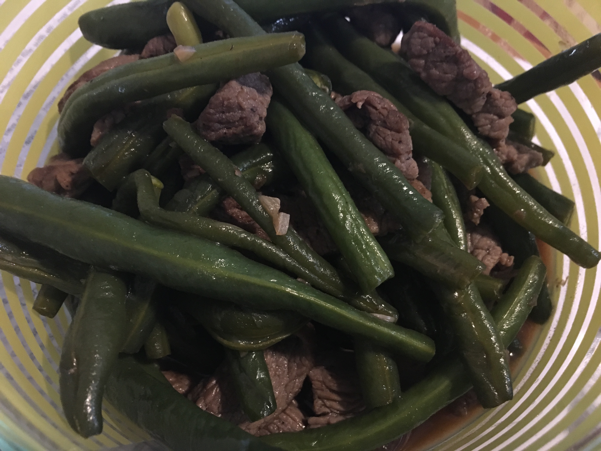

| Other | Meat | Veggie | Fruit |
|---|---|---|---|
| oyster sauce | beef | garlic | |
| pepper | green beans | ||
| salt | mushrooms | ||
| shallot |
| instructions |
|---|
| Marinate sliced beef with shallots, garlic, salt, pepper, and a pinch of oil |
| Stir fry beef until cooked but moist (remove excess liquid) |
| Stir in and cook mushrooms and green beans until soft |
| Drizzle in diluted oyster sauce (1:1 ratio) |